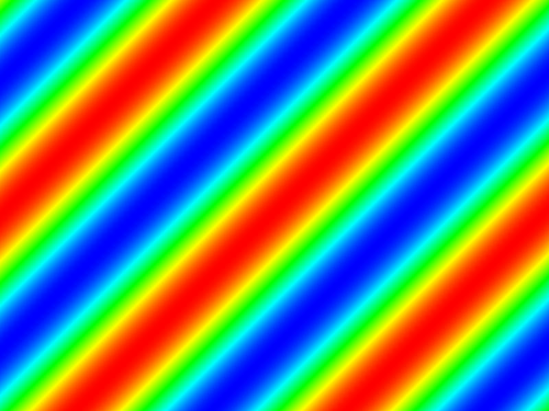

Simulation de la propagation de la chaleur
Le but de cet exercice est de simuler la propagation de la chaleur dans un matériau uniforme, en deux dimensions. Pour cela, on commencera par écrire une version séquentielle du calcul avant de le paralléliser.
Affichage de la carte de temperature
La première étape est de créer un projet qui affiche un image dans un fenêtre. Pour cela, nous utiliserons les bibliothèques:
- piston_window pour afficher une fenêtre graphique,
- image pour créer un image à partir de la distribution de la température, et
- fps_counter pour compter le nombre d'images produites par seconde.
Créez un nouveau projet Rust (cargo init --bin) et éditez la section [dependencies] du
ficher Cargo.toml pour dépendre de ces libraires.
[dependencies]
fps_counter = "1.0"
image = "0.15"
piston_window = "0.70"
On donne une fonction display qui affiche une image dans une fenêtre. Cette fonction
prend en argument le titre de la fenêtre, sa largeur et sa hauteur ainsi qu'une fonction
step calculant un pas de la simulation. La fonction step prend en argument une
référence mutable vers l'image afficher dans la fenêtre et est chargée de la mettre à
jours pour le pas suivant.
//! Simulation de l'équation de la chaleur. extern crate fps_counter; extern crate image; extern crate piston_window; use piston_window::*; /// Ouvre une fenêtre pour afficher une image. L'image est mise à jour entre chaque /// affichage en appelant la fonction `step`. pub fn display<F>(title: &str, height: usize, width: usize, mut step: F) where F: FnMut(&mut image::RgbaImage) { // Création de la fenêtre. let glutin_window = WindowSettings::new(title, (width as u32, height as u32)) .exit_on_esc(true) .resizable(false) .srgb(false) // Necessary due to issue #139 of piston_window. .build() .unwrap_or_else(|e| panic!("Failed to build window: {}", e)); let mut window: PistonWindow = PistonWindow::new(OpenGL::V3_2, 0, glutin_window); // Création de l'image. let black_pixel = image::Rgba { data: [0, 0, 0, 255] }; let mut img = image::RgbaImage::from_pixel(width as u32, height as u32, black_pixel); let tex_settings = TextureSettings::new(); let mut tex_factory = window.factory.clone(); // Création du conteur de FPS. let mut fps_counter = fps_counter::FPSCounter::new(); let font = "assets/FiraMono-Regular.ttf"; let glyph_settings = TextureSettings::new(); let mut glyphs = Glyphs::new(font, window.factory.clone(), glyph_settings).unwrap(); // Boucle de traitement des évenements. while let Some(e) = window.next() { window.draw_2d(&e, |c, g| { clear([0.0, 0.0, 0.0, 1.0], g); // Affichage d'un pas de calcul. step(&mut img); let tex = Texture::from_image(&mut tex_factory, &img, &tex_settings).unwrap(); image(&tex, c.transform, g); // Affichage du compteur de fps. let fps = format!("{} fps", fps_counter.tick()); let transform = c.transform.trans((width-100) as f64, 30.0); text([1.0, 1.0, 1.0, 1.0], 32, &fps, &mut glyphs, transform, g); }); e.idle(|_| { fps_counter.tick(); step(&mut img); }); } } /// Hauteur de la carte de température. const HEIGHT: usize = 600; // Largeur de la carte de température. const WIDTH: usize = 800; fn main() { display("Propagation de la chaleur 2D", HEIGHT, WIDTH, |image| { // TODO: calculer un pas de simulation }); }
Pour pouvoir afficher le nombre d'image par seconde, nous avons besoin de fournir une
police de caractères. Pour cela, créez un dossier assets/ à la racine du projet et
copiez y le fichier de police Fira Mono (license).
Si vous compiler et exécutez le code, vous devriez maintenant voir une fenêtre noire avec
un compteur d'image par seconde en haut à droite s'afficher. Le deuxième étape est
maintenant de mettre à jours l'image avec la valeur de la température. La température est
stockée dans un tableau de tableau de flotants (type Vec<Vec<f64>>). Afin de convertir
la température en couleur, nous fournissons la fonctions map_color qui convertie un
flotant entre -1 et 1 en composantes rouge, verte et bleue.
# #![allow(unused_variables)] #fn main() { /// Maps values between -1 and 1 to RGB colors. fn map_color(value: f64) -> (u8, u8, u8) { // Express as HSL with S=1 and L=.5, and H between 0(red) and 4/6(blue). let h = f64::max(0.0, f64::min(1.0, (1.0-value) * 2.0/6.0)); // Then convert to RGB. let x = 1.0 - (((h*6.0) % 2.0) - 1.0).abs(); let (r, g, b) = if h < 1.0/6.0 { (1.0, x, 0.0) } else if h < 2.0/6.0 { (x, 1.0, 0.0) } else if h < 3.0/6.0 { (0.0, 1.0, x) } else { (0.0, x, 1.0) }; ((r*255.0) as u8, (g*255.0) as u8 , (b*255.0) as u8) } #}
Question 1. Écrivez une fonction temp_to_image qui prend en entrée une référence
vers la matrice de température et une référence mutable vers l'image et qui modifie
l'image pour représenter la température. L'image est représentée comme un tableau de bytes
(type [u8]) de taille 4*HEIGHT*WIDTH où:
- la case
4 * (i * WIDTH + j)représente la composante rouge du pixel (i, j). - la case
4 * (i * WIDTH + j) + 1représente la composante verte du pixel (i, j). - la case
4 * (i * WIDTH + j) + 2représente la composante bleue du pixel (i, j). - la case
4 * (i * WIDTH + j) + 3représente la composante transparence du pixel (i, j), à laisser à 255 (opaque) dans notre cas.
Question 2. Pour vérifier que tout marche, on va maintenant afficher la distribution de température \(u(x, y, t)\):
\[u(x, y, t) = \sin \left( \frac{t+x+y}{2\pi} \right)\]
Modifiez la fonction main pour afficher cette distribution en utilisant la fonction
temp_to_image. Vous utiliserez les constantes DT et DX définies comme suit pour
représenter le pas temporel de calcul et l'espacement entre deux pixels. La constante
\(\pi\) est définie en Rust par std::f64::consts::PI.
# #![allow(unused_variables)] #fn main() { /// Pas temporel de calcul. const DT: f64 = 1.0e-2; /// Pas dimentionel de calcul. const DX: f64 = 1.0e-1; #}
Vous devriez obtenir une image avec des bandes transversales qui se déplacent, comme dans l'image ci-dessous.

Calcul séquentiel
On va maintenant passer à la simulation de la diffusion de la chaleur. La propagation de la chaleur est définie par l'équation: \[\frac{\partial u}{\partial t} = K \left(\frac{\partial^2 u}{\partial x^2} + \frac{\partial^2 u}{\partial y^2}\right) \] Ce qui donne, une fois discrétisé: \[ \begin{eqnarray} u(t+dt, x, y) = u(t, x, y) + \frac{K \times dt}{dx^2} &\Big[& u(t, x-dx, y) + u(t, x+dx, y) - 2 u(t, x, y) \\ &+& u(t, x, y-dx) + u(t, x, y+dx) - 2 u(t, x, y) \Big] \end{eqnarray} \]
Question 3. Écrire une fonction small_step qui calcule la nouvelle carte de
température en fonction de l'ancienne. La constante K sera pour le moment fixée à 25.
On réutilisera la distribution de la question 2 pour la valeur de la température aux
bords.
# #![allow(unused_variables)] #fn main() { const K: f64 = 25.0; fn small_step(old_temp: &Vec<Vec<f64>>, new_temp: &mut Vec<Vec<f64>>, time: f64) { // TODO: calculer new_temp en fonction de old_temp } #}
On ne peux pas afficher la carte de température à chaque pas de calcul car cela
consommerait trop de ressources. À la place, on fait plusieurs appels à small_step dans
chaque appel de la fonction step passé à display. Le nombre de petits pas de calcul
sera défini par la constante SMALL_STEP.
# #![allow(unused_variables)] #fn main() { const SMALL_STEP: usize = 32; #}
Question 4. Modifier la fonction main pour simuler l'équation de la chaleur. On
initialisera la carte de température à -1. Pour échanger les valeurs de l'ancienne de la
nouvelle carte de température, vous pourrez utiliser la fonction
std::mem::swap
Il est conseillé de fixer DT à \(10^{-4}\) pour que le pas temporel ne soit pas trop
grand et que la simulation fonctionne. Vous pourrez ensuite jouer avec les différents
paramètre pour voire comment évolue la distribution de la chaleur.
Attention, si vous voulez tester la rapidité de votre code, il faut passer l'option
--release à Cargo. En effet, sans cette option, le code généré sera beaucoup moins
optimisé et donc anormalement lent.
Parallélisation du code
On va maintenant paralléliser les fonctions small_step et temp_to_image afin
d'accélérer la simulation. Pour cela, nous utiliserons la bibliothèque rayoni
vue en cours. Il faut donc ajouter une dépendance à la version 0.8 de rayon dans le
fichier Cargo.toml. Nous vous invitons fortement à consulter la
documentation de rayon et notamment les pages sur les traits
ParallelIterator et IndexedParallelIterator
qui indiquent les opérations que l'on peux effectuer sur un itérateur parallèle et sur un
itérateur parallèle indéxé. On rappelle que pour utiliser rayon, il faut importer le
prélude de rayon dans le contexte:
# #![allow(unused_variables)] #fn main() { use rayon::prelude::*; #}
Question 5. Écrivez un version parallèle de small_step que vous nommerez
small_step_par et modifiez la fonction main pour l'utiliser. Vérifiez que vous
améliorez bien la vitesse de simulation.
Question 6. De même, parallélisez la fonction temp_to_image.
On veux maintenant mesurer de façon précise le gain de performance apporté par le
parallélisme. Pour cela, on va benchmarker la fonction small_step en isolation.
Pour mesurer le temps d'exécution, on utilisera les fonctionnalités de benchmarking de
Rust décrites ici.
Question 7. Calculez le facteur d'accélération des versions parallèles de
small_step et de temp_to_image par rapport aux versions séquentielles.
Question 8 (exploratoire). On souhaite à présent optimiser la fonction small_step afin
d'accélérer encore la simulation.
-
La première idée consiste à tirer parti de la localité temporelle du calcul, en effectuant un déroulage de boucle selon la deuxième dimension. Le compilateur pourra ainsi découvrir automatiquement que les valeurs lues sur le front droit du stencil viennent d'être calculées quelques instructions plus tôt, et éliminera ainsi quelques accès mémoire.
-
Une autre approche repose sur la vectorisation des instructions de calcul à travers plusieurs itérations de la première dimension. Le compilateur Rust reposant sur LLVM (http://llvm.org), un environnement très riche de compilation disposant d'une passe de vectorisation automatique, capable de regrouper plusieurs opérations ou accès mémoire consécutifs en une seule instruction dite vectorielle (ou SIMD) du processeur. On pourra tenter de déclencher cette vectorisation au prix d'une transformation de boucles appelée stripmining, effectuant le calcul par pas d'exactement 4 itérations (les instructions vectorielles sur processeurs x86 sont de taille 256 bits, soit 4 nombres à virgule flottante de 64 bits sur la plupart des processeurs récents). La configuration fine du compilateur L'analyse du code assembleur généré est nécessaire pour inspecter la réussite ou non de l'opération.
-
Une troisième voie consiste à explorer le partitionnement temporel du calcul, ou time tiling, et notamment les méthodes appelées overlapped tiling ou split tiling. Veuillez vous adresser aux enseignants pour explorer cette optimisation.